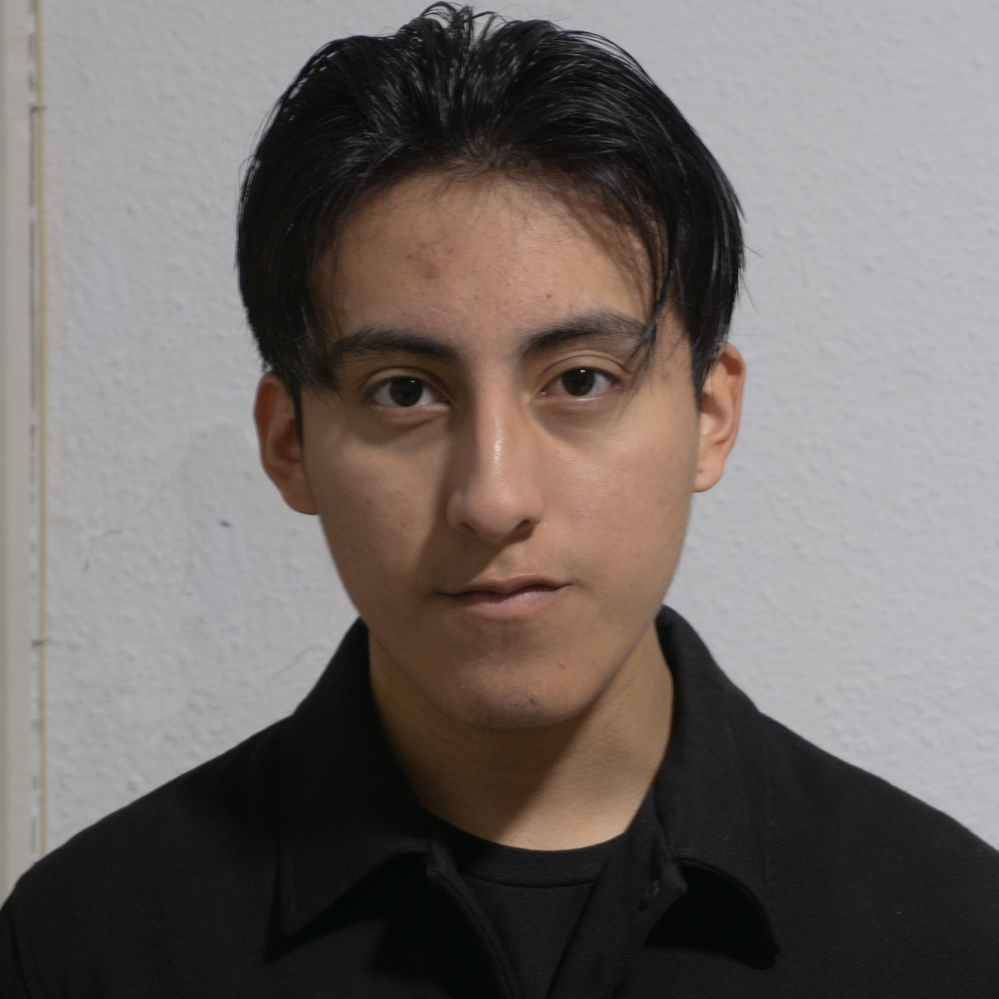

Técnico en Desarrollo de Aplicaciones Multiplataforma
+34 722 43 14 18
Valencia, España
Estudiante de Sistemas informáticos con un gran interés en la atención al cliente. Por mi área de estudio tengo mucha experiencia con buenos resultados de trabajo en equipo. Busco una oportunidad laboral con la que adquirir más experiencia.
Java
Python
SQL Server
MongoDB
JavaScript
HTML
Bootstrap
CSS
🇬🇧 Inglés Avanzado
🇪🇸 Castellano Nativo
🏴 Valenciano Nativo
Campus Cámara FP | 09/ 2023 - Actualidad
Haciendo un favor a mi experiencia y cercanía con la tecnología y la programación, escogí cursar este ciclo como formación intermedia o preparación para adentrarme al campo de la ingeniería informática.
IES Sorolla | 09/2020 - 05/ 2022
A pesar de mi cercanía y gusto por la tecnología y mis habilidades matemáticas, realicé la modalidad artística de bachillerato para desarrollar otros de mis puntos más fuertes a nivel personal; mi destreza con el dibujo, la fotografía y el vídeo. En definitiva, mi capacidad de crear y diseñar.
Vendedor de Caja/Reposición | 06/2023 - Actualidad
Desde que formo parte del equipo de Consum he podido poner en práctica la correcta distribución de tareas entre compañeros y una organización óptima de eventos y necesidades. Además, por el sector en cuestión mis habilidades de comunicación y resolución con el cliente han ido perfeccionándose a lo largo del tiempo.
Vendedor de Caja/Reposición | 09/2022 - 11/2022
Un breve período de prácticas en los supermercados de Carrefour Express como cajero y reponedor en equipo me dieron la oportunidad de adentrarme en el mundo laboral y de poner en práctica mis habilidades de comunicación y atención al cliente.
Cámara de Comercio de Valencia | 09/2023 - Actualidad
Programa orientado a poner en práctica y aprender sobre un conjunto de habilidades blandas importantes tales como; escucha activa, tolerancia a la presión, cooperación, comunicación y adaptación al cambio, entre otras.
AESCO ONG | 07/2022 - 08/2022
En este curso de 20h tuve la oportunidad de conocer y aprender de personas con una gran experiencia en el trabajo de cara al público en el extranjero.